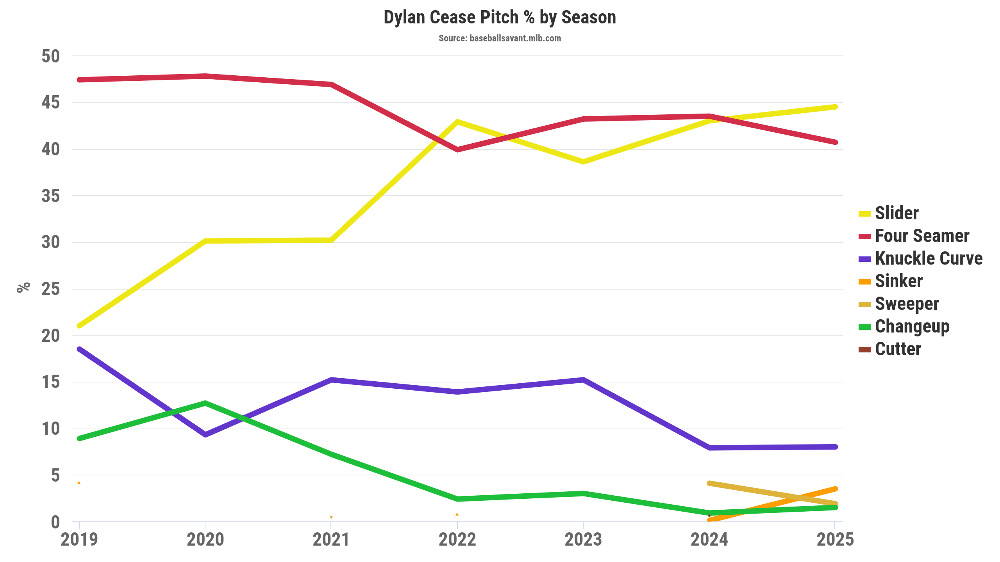
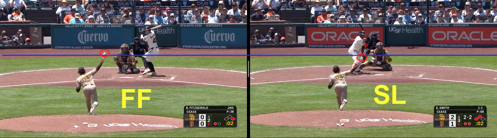
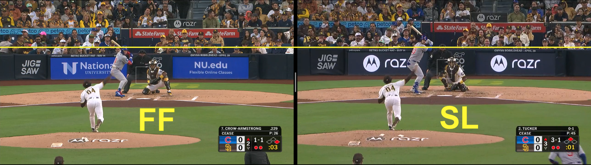
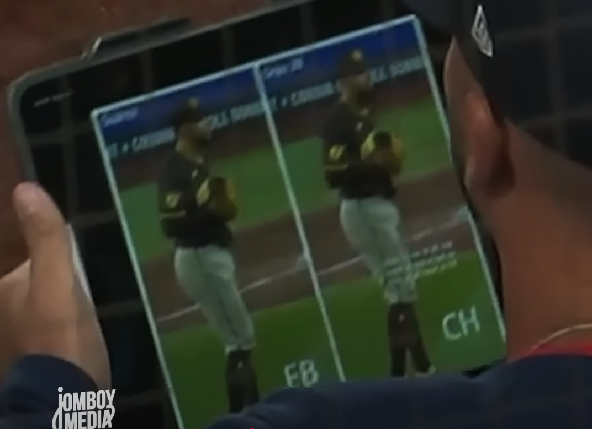

Vertical release position as a pitch tipping indicator?
➤ Introduction: A look at Dylan Cease’s pitch selection
Dylan Cease strongly favors his slider and fastball. Per Baseball Savant, 88.2% of his pitches through 2025 were either a slider or four seamer (fastball).

If the vertical release position for Cease’s slider is significantly different from his fastball, could a batter make a good prediction about the upcoming pitch?
➤ Vertical release position analysis
The following figure shows the vertical release positions (defined as “release_pos_z” in Baseball Savant’s documentation) for Cease’s top two pitches in 2025. Sliders are abbreviated with “SL”, while fastballs are abbreviated with “FF”. Innings pitched (“IP”), pitch counts per pitch type, and Game Score (“GS”, a measure of a pitcher’s performance, are also included).
Across all game dates in 2025, the median vertical release position for sliders is lower than the median vertical release position for fastballs. While we can explore the question of determining statistical significant differences between Cease’s fastball and slider vertical release positions, I think it’s important to ask a practically significant question:
- Can a player (in particular, an opposing batter who stands 60.5 feet away from Cease) recognize a few inches of difference in release position?
➤ Video analysis
To address this question, I tracked the video URLs for each slider and fastball closest to their respective medians, for each game date.
I also looked at the videos for the game date with the largest difference between the highest fastball vertical release position and the lowest slider vertical release position. From the box plots, we can see that occurred on June 5th, 2025, where the highest fastball vertical release position was 77.76 inches and the lowest slider vertical release position was 70.2 inches; a 7.56 inch difference. Here’s what those pitches look like:

I tried performing similar analysis for the game date with the largest median difference. Unfortunately, we can see that the video camera was oriented differently between pitches, as the backstop appears to be lower in the fastball video than in the slider video.

I haven’t had the chance to review other videos yet, but have curated a list of video URLs for pitches closest to their respective medians on each game date below.
➤ Conclusion & Next Steps
Though there are challenges in reviewing video data with different camera orientations, there may still be more to learn from this project. I received a suggestion to explore using computer vision methods with the BaseballCV repository (shout-out to Oliver Chang). I also think there will always be some interest in exploring pitch tipping (e.g. last week, a Red Sox coach was spotted holding an iPad with an image contrasting the opponent pitcher’s pre-pitch positioning).

➤ Code
Please see my GitHub for code to retrieve Baseball Savant data and reproduce this analysis.